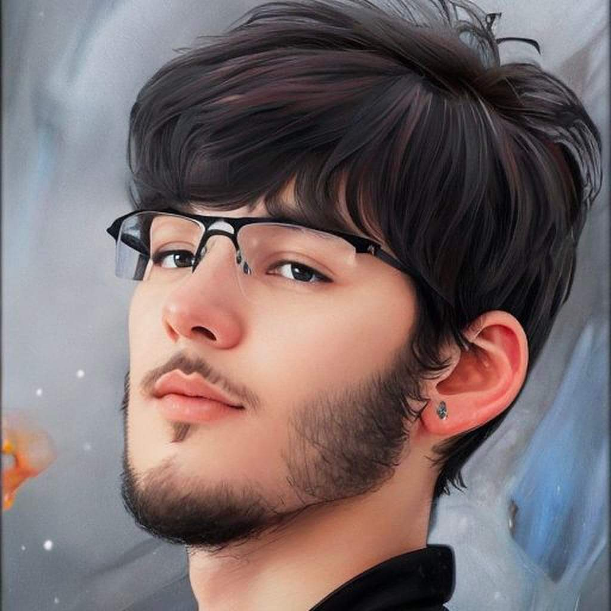
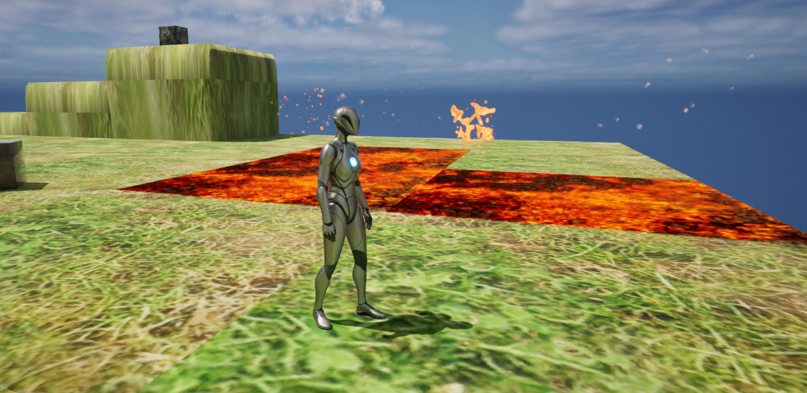

Hello im Colby Goitia as a dedicated college student specializing in game programming, I possess a unique blend of creativity and technical expertise.
My academic journey has equipped me with a strong foundation in computer science, focusing on game design, development, and programming languages like C++ and Unity.
My passion for gaming extends beyond the classroom, driving me to constantly learn new technologies and trends in the industry.
I am committed to pushing the boundaries of interactive entertainment and aspire to create immersive and impactful gaming experiences.
In "Echoes of the Realm," players navigate a dynamic, living world where every action and decision significantly alters the environment and storyline.
My academic journey has equipped me with a strong foundation in computer science, focusing on game design, development, and programming languages like C++ and Unity.
As players interact with characters, complete quests, and explore diverse landscapes, they will witness the immediate and long-term consequences of their actions.
Towns may flourish or fall into ruin, landscapes can transform, and alliances shift, offering a unique and evolving narrative with each playthrough.
This reactive world ensures that no two experiences are the same, encouraging players to think strategically and explore the multitude of possibilities their decisions unlock.
